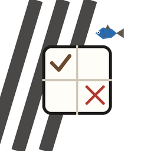

键盘：←↑→↓ 移动光标 · x 划掉 · o 打勾 · 空格 循环 · ⌫ 清空 · [ ] 换类别对
题面
这一盘的来历（引擎自己记的账）
我的分配（答案面板）
每间房子在每个类别上填一个值；填完按「校验我的分配」。
判分问的是你说的这组分配是否满足全部线索，读的是 rules.checkSolution。

纸笔交互：类别对上打 ✓/✗，最后把分配写进答案面板交给规则裁判。 每一盘都由 seed 现算，页面里没有答案字段，提示只念铅笔规则自己删掉的那些格。
键盘：←↑→↓ 移动光标 · x 划掉 · o 打勾 · 空格 循环 · ⌫ 清空 · [ ] 换类别对
每间房子在每个类别上填一个值；填完按「校验我的分配」。
判分问的是你说的这组分配是否满足全部线索，读的是 rules.checkSolution。